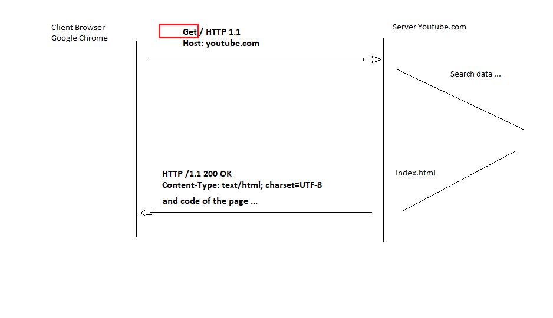

HTTP
Created by
Alexander Kulikov
What is a HTTP ?

HTTP - HyperText Transfer Protocol
Timothy John Berners-Lee
Versions Protocol HTTP:
- HTTP 0.9 in 1992
- HTTP 1.0 in 1996
- HTTP 1.1 in 1999
- HTTP 2.0 in 2015

Methods HTTP
- GET - the transfer request of the web page
- POST - data transfer to web server
- HEAD - requests only the page title
- PUT - the room page to your web server
- DELETE - deleting a page from a web server
- TRACE - helps to track page changes
-
OPTIONS - helps to know what methods are supported
-
CONNECT - allows you to connect to the web server via
Proxy
Statuses HTTP
- 1XX - informational messages
-
2XX - successful implementation (for example 200 OK)
- 3XX - redirect
-
4XX - error on the client side(for example 404 - page
not found)
- 5XX - server error
Modern Web
the end